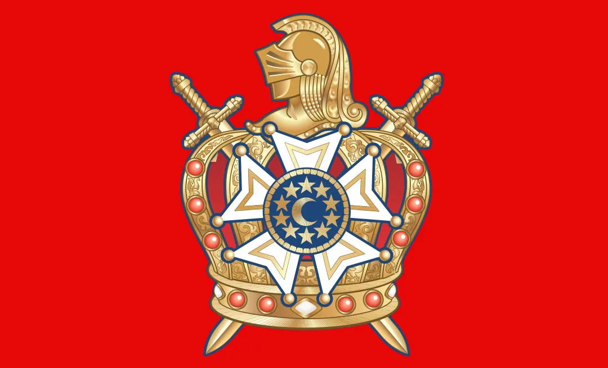

A Ordem DeMolay é a maior ordem juvenil do mundo com mais de 3 milhões de DeMolays
espalhados pelo mundo, ela é uma organização fraternal vinculada a maçonaria para
jovens do sexo masculino com idade entre 12 e 21 anos. Ela tem como objetivo formar
líderes para sociedade e ensina valores como Amor filial, Reverência pelas coisas sagradas,
Cortesia, Companheirismo, Fidelidade, Pureza e Patriotismo.
Eu iniciei na Ordem DeMolay há 2 anos no dia 29 de abril de 2023, eu entrei visando
crescer como pessoa e contribuir para sociedade. Desde então fiz inúmeras coisas como
participar de reuniões, ações solidarias de doação e trabalho voluntário, ganhei cargos de destaques,
dei palestras sobre assuntos como Neurodiversidade, Aquecimento Global, Transtorno do espectro autista,
participei de viagens e fiz visitas a outras cidades e eventos estaduais da Ordem DeMolay.
A Ordem me ensinou a ser mais responsável, comunicativo e a trabalhar em equipe.
Ela me ajudou a formar caráter e valores que levo para a vida, conheci pessoas
incríveis e vivi experiências que me fizeram evouir como ser humano e cidadão.
